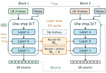
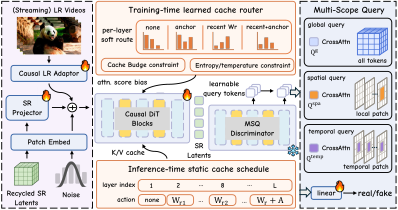

ReCaVSROne-Step Streaming Diffusion Video Super-Resolution
with Recycled Latents and Learned Cache Routing
University of Science and Technology of China
arXiv · September 2026
Input on the left · ReCaVSR on the right · Synchronized playback
Abstract
Real-time diffusion-based video super-resolution (VSR) is in high demand for online streaming, yet stringent latency requirements often compromise generative fidelity. We propose ReCaVSR, a Wan2.2-based, one-step framework for streaming VSR that builds on two observations: recycled SR latents retain local temporal context, reducing the need for full historical Key-Value (KV) caches; and individual transformer layers benefit from distinct temporal scopes.
ReCaVSR combines three complementary designs: (i) layer-wise cache routing with recycled SR latents: each DiT layer learns its KV-cache temporal scope under a cache budget and exports a static inference schedule, while recycled SR latents propagate local context by conditioning each new block on the model’s own preceding predictions. (ii) Multi-Scope Query (MSQ) Discriminator: a compositional discriminator combining global, spatial-window, and temporal-tube feedback for holistic realism, local texture generation, and temporal stability. (iii) LR-conditioned adaptation of FlashDecoder: a VAE decoder that incorporates LR observations for efficient latent decoding. ReCaVSR enables streaming VSR without iterative sampling or full historical KV-cache materialization.
Experiments on synthetic and real-world VSR benchmarks show better perceptual quality, temporal consistency, and streaming efficiency than representative VSR baselines. At 1080 × 1920 output resolution on a single NVIDIA A100-80GB, ReCaVSR achieves 21.20 FPS with 15.16 GB peak allocated GPU memory, running 2.72 × faster while using 38.0% less peak allocated memory than FlashVSR Tiny. The code is available at https://github.com/kopperx/ReCaVSR.

Method
Recycled latents, learned cache routing, and one-step reconstruction.

Visual results
Real-world, synthetic, and AIGC videos. Select a scene for a full-size input comparison.
Long-form streaming
1,000 frames. The complete sequence. Watch continuously, or explore with the timeline.
Interactive method comparisons
Select a scene and a baseline. ReCaVSR stays on the right, with playback aligned to the same frame.
Qualitative comparisons
Representative visual comparisons on synthetic and real-world sequences.